Scan CNC è una funzionalità che consente di creare pezzi personalizzati a partire da una sagoma reale posizionata sul banco macchina.
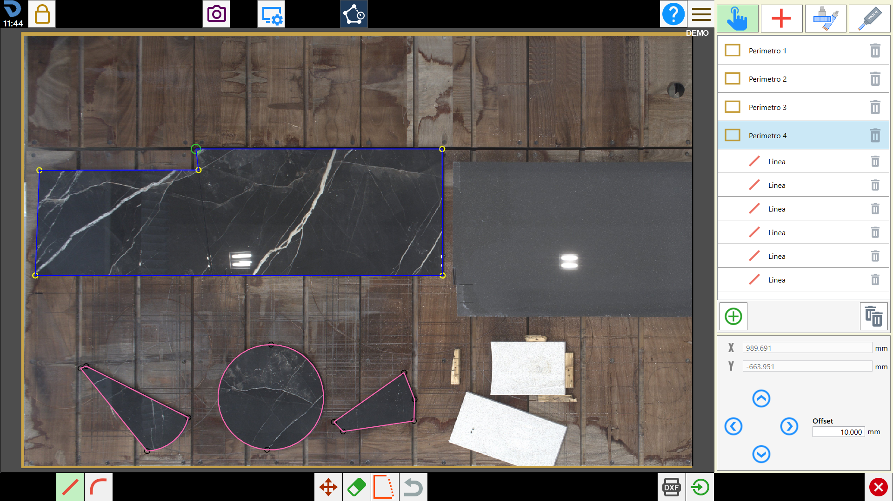
Pulsanti
Per aprire Scan CNC, premere il pulsante dedicato nella barra superiore di Parametrix.
Scan CNC |
Se sono presenti pezzi nell’area di lavoro, l’utente riceverà la richiesta di importarli come perimetri. Indipendentemente dalla scelta, i pezzi verranno rimossi dall’area di lavoro.
Struttura della schermata
La schermata di Scan CNC è suddivisa nelle macro aree che verranno descritte di seguito.
Pannello laterale destro
Il pannello destro illustrato di seguito, ospita tutti i controlli operativi.
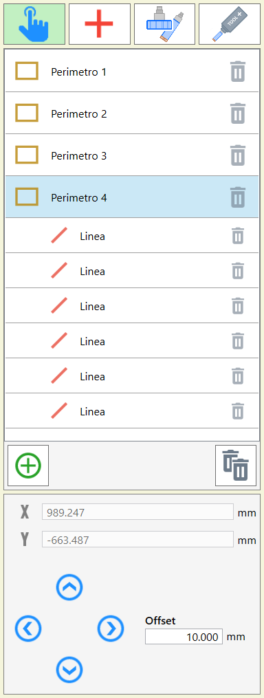
Modalità di rilevamento punti
Questa sezione è visibile solo se si usa Parametrix su macchina. Permette di scegliere come vengono acquisiti i punti del perimetro.
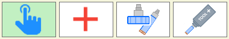
Touch | |
Laser a croce | |
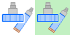 | Tool |
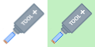 | Tool Plus |
La selezione della modalità è mutualmente esclusiva.
La modalità impostata di default è
Touch
.
Elenco dei perimetri
Mostra tutti i perimetri creati. Selezionando un perimetro dall’elenco, esso viene evidenziato nell’area di lavoro. Espandendo un perimetro si visualizzano le singole curve che lo compongono, anch'esse selezionabili singolarmente.
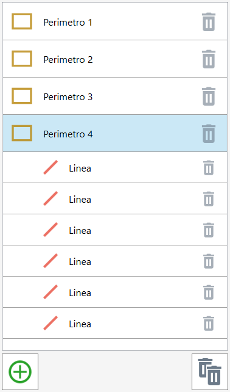
Perimetro | |
Linea | |
Arco |
I pulsanti sottostanti permettono di interagire con i perimetri dell’elenco.
Aggiungi perimetro | |
Elimina tutti i perimetri | |
/3.26.del_p.png) | Elimina perimetro |
Elimina curva |
Modifica entità selezionata
Questa sezione mostra le coordinate del punto selezionato e permette di modificarne la posizione con precisione. Se è selezionata una curva, mostra invece la lunghezza e l'angolo della curva, modificabili direttamente.
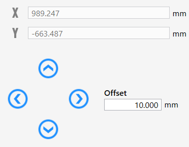
Nel caso in cui è selezionato un punto vengono mostrate le sue coordinate, non modificabili direttamente:
X | |
Y |
In modalità macchina (Laser a croce, Tool, Tool Plus) le coordinate X e Y visualizzate nel pannello mostrano la posizione corrente della macchina in tempo reale, se nessun punto è selezionato.
Quando è selezionata una curva vengono mostrate le seguenti quote modificabili:
Lunghezza |
Le frecce spostano il punto selezionato (o il perimetro intero in modalità Sposta Perimetro) di un valore pari all'Offset impostato.
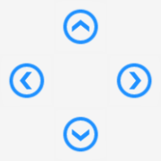 | Movimento abilitato |
Movimento disabilitato | |
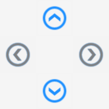 | Movimento punto medio arco |
Offset | Valore dello spostamento applicato ad ogni pressione delle frecce direzionali. |
Area di lavoro centrale
Di seguito verranno illustrate le funzionalità dell’area di lavoro centrale.
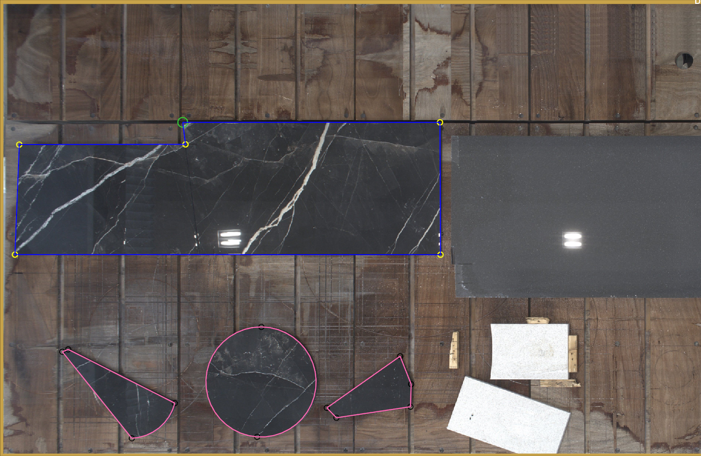
Punto
Default | |
Default Punto medio arco | |
Ultimo punto perimetro aperto | |
Selezionato | |
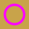 | Anteprima |
Calamita | |
Disattivato | |
Anteprima punto medio arco |
Curva
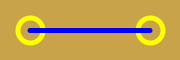 | Linea default |
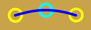 | Arco default |
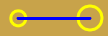 | Ultima curva |
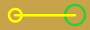 | Selezionata |
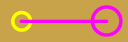 | Anteprima |
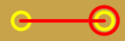 | Calamita |
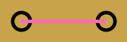 | Disattivata |
Barra inferiore
La barra inferiore contiene i pulsanti per le azioni principali.
I pulsanti che si trovano in basso a sinistra permettono di scegliere il tipo di curva da inserire al prossimo click per rilevamento punti.
Linea | |
Arco |
La selezione della modalità è mutualmente esclusiva.
La modalità impostata di default è
Linea
.
Per aggiungere un vertice al perimetro, è sufficiente premere su un punto dell’area di lavoro. Se si desidera utilizzare la macchina per rilevare i punti, è necessario utilizzare il seguente pulsante.
Aggiungi punto |
Al centro sono presenti pulsanti che consentono di modificare il perimetro selezionato.
Sposta perimetro | |
Gomma | |
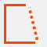 | Chiudi perimetro |
Annulla ultima curva | |
Magnete macchina |
I pulsanti sul lato destro permettono di esportare i perimetri creati.
Esporta DXF | |
Importa pezzi |
Utilizzo
Inserimento punti e curve
L'inserimento avviene cliccando nell’area di lavoro (modalità touch) oppure premendo il pulsante aggiungi punto (modalità macchina).
Il tipo di curva creata dipende dalla modalità entità selezionata.
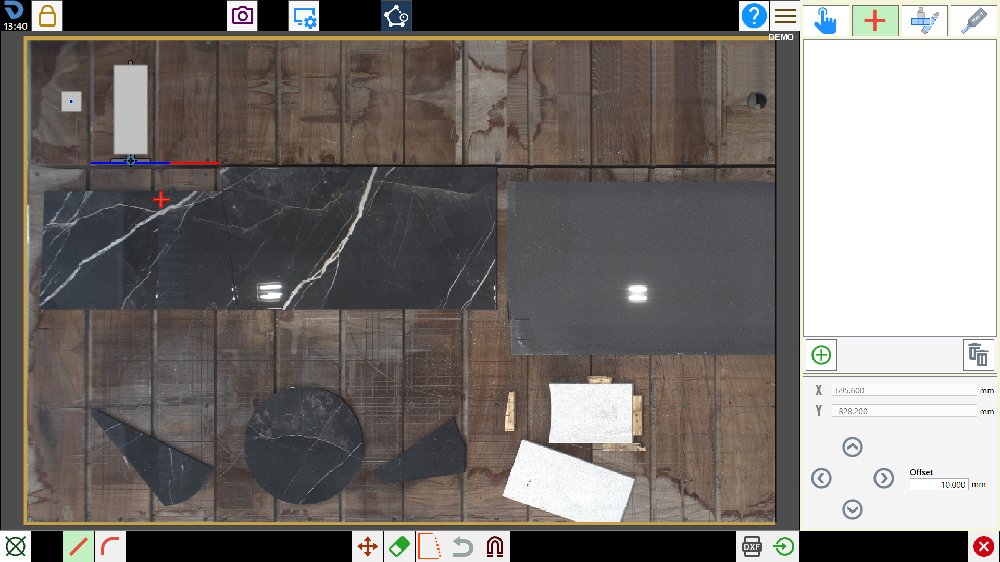
Inserimento in modalità Linea
Ogni click nell’area di lavoro aggiunge un punto. Una linea viene creata automaticamente tra il punto precedente e il nuovo punto. L'anteprima della linea è visibile durante il movimento del mouse.
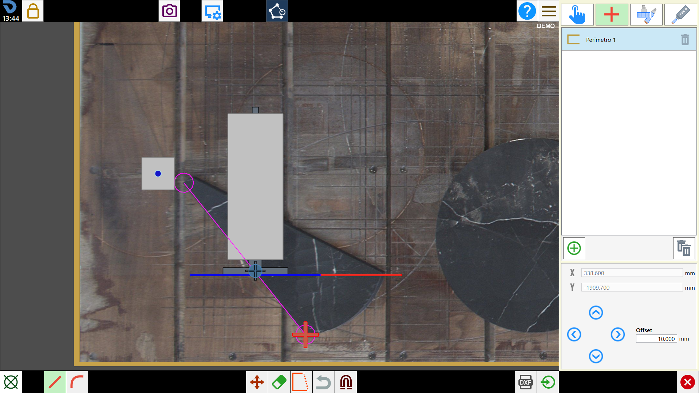
Inserimento in modalità Arco
L'arco richiede tre punti: un punto iniziale, uno intermedio e uno finale.
I primi due click definiscono rispettivamente il punto iniziale e quello intermedio, mentre il terzo click crea l’arco passante per i tre punti.
Durante l'inserimento viene mostrata l'anteprima dell'arco in corso di definizione.
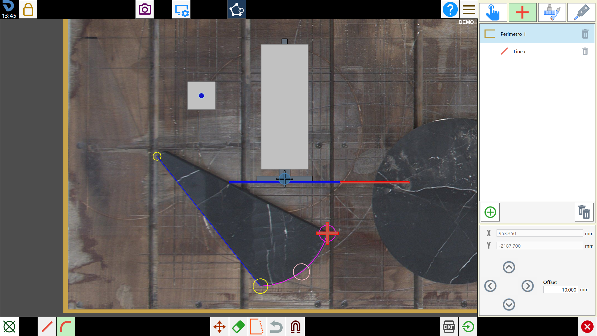
Se il punto iniziale e il punto intermedio coincidono, l’inserimento del punto viene ignorato. L'arco diventa automaticamente una linea se i tre punti sono collineari.
Selezione e modifica di punti e curve
Cliccando su un punto o su una curva nell’area di lavoro si seleziona l'entità. È possibile modificare la posizione del punto selezionato trascinandolo, muovendolo tramite le frecce direzionali.
Regole di selezione
Click su punto | Seleziona il punto cliccato. Se il perimetro a cui appartiene non è selezionato, seleziona prima il perimetro. |
Click su curva | Seleziona la curva e imposta automaticamente il punto finale come punto selezionato. |
Modifica della lunghezza di una curva
Selezionare una curva, quindi modificare il campo Lunghezza nel pannello destro. Il punto opposto a quello selezionato viene spostato nella direzione della curva stessa. La modifica è applicata in tempo reale durante la digitazione.
Spostamento tramite frecce direzionali
Con un punto selezionato, i tasti freccia ne modificano la posizione in base al valore di offset impostato nel pannello destro. Se è attiva la modalità Sposta Perimetro, i tasti freccia traslano l’intero perimetro. Per il punto medio di un arco, i tasti freccia permettono di muoverlo perpendicolarmente alla curva.
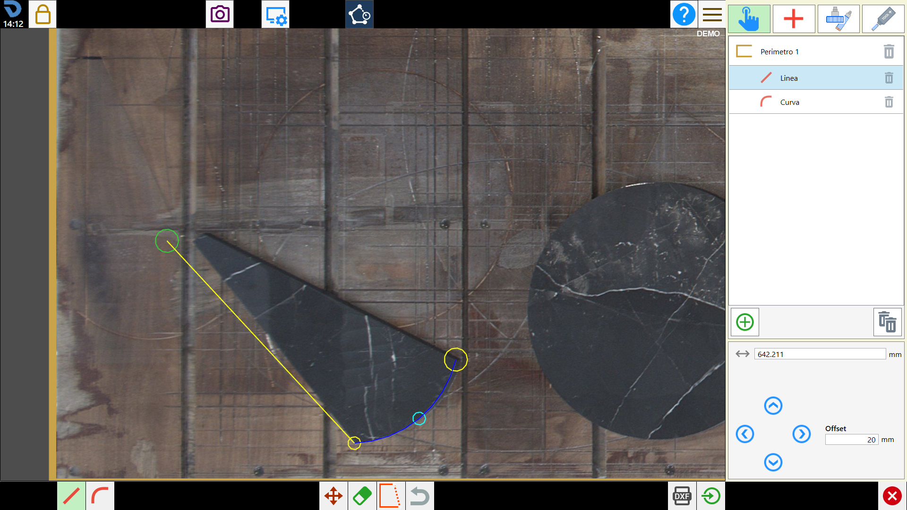
Eliminazione
È possibile eliminare singoli punti, singole curve o interi perimetri. Le operazioni di eliminazione seguono regole specifiche per mantenere la coerenza geometrica del perimetro.
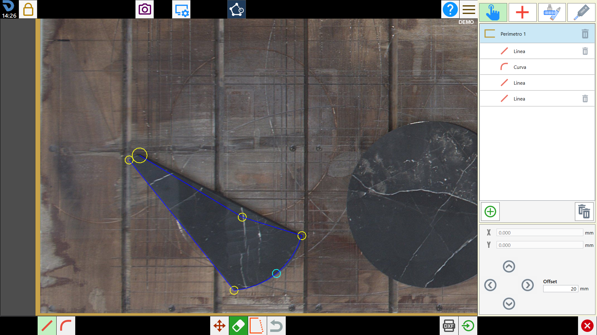
Eliminazione di un punto
Un punto si elimina tramite la modalità Gomma cliccando sul punto nell’area di lavoro. Le conseguenze dipendono dalla posizione del punto nel perimetro.
Punto estremo (perimento aperto) | Elimina il punto su cui si è premuto e la curva corrispondente. |
Punto interno | Unifica le due curve adiacenti in una sola (la curva risultante è una linea tra i due estremi rimasti). |
Punto medio di arco | L'arco viene convertito in una linea tra il suo punto iniziale e il suo punto finale. |
Eliminazione di una curva
Una curva si elimina tramite la modalità Gomma cliccando sulla curva nell’area di lavoro, oppure dal pulsante Cestino nella lista del pannello destro. Le conseguenze dipendono dallo stato del perimetro.
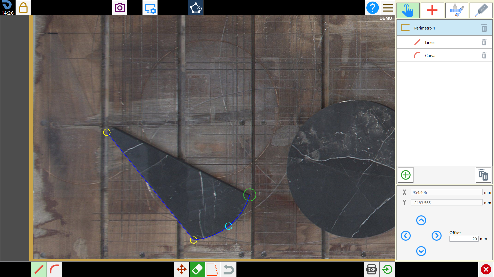
Perimetro chiuso | La curva eliminata apre il perimetro. |
Perimetro aperto | È possibile eliminare solo la prima o l'ultima curva. |
Eliminazione di un perimetro
Un perimetro si elimina tramite il pulsante Cestino nella riga del perimetro nella lista del pannello destro.
Chiusura del perimetro
Un perimetro chiuso è necessario per poter esportare pezzi Parametrix o file DXF. Un perimetro si considera chiuso quando l'ultimo punto coincide con il primo.
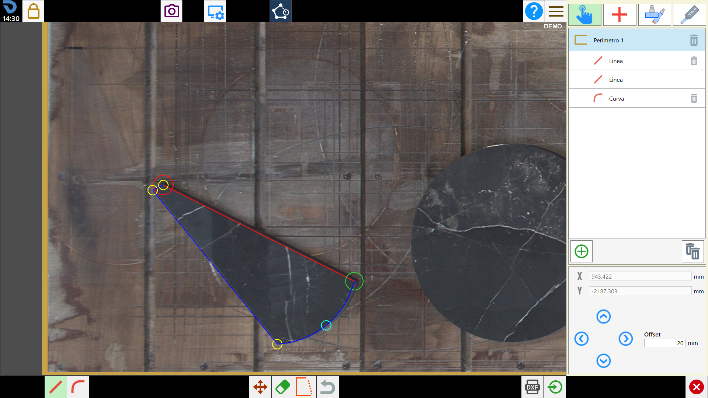
Pulsante Chiudi perimetro | Aggiunge automaticamente una curva di chiusura tra l'ultimo e il primo punto del perimetro. Se la modalità entità selezionata è Arco, la curva sarà un arco, altrimenti una linea. |
Ancoraggio magnetico | Trascinando l'ultimo punto del perimetro vicino al primo, o viceversa, i due punti si attraggono automaticamente chiudendo il perimetro. |
Esportazione DXF
Permette di salvare i perimetri chiusi come file DXF nella cartella ‘DXF’ del progetto corrente. I perimetri aperti vengono ignorati.
Per esportare, premere il pulsante Esporta DXF nella barra inferiore. Al termine della procedura compare un messaggio con il nome del file generato.
Se non è presente alcun perimetro chiuso, verrà mostrato un avviso.
Il nome del file DXF generato corrisponde al nome del file di lavoro attivo al momento dell'esportazione.
Importazione pezzi
Converte i perimetri chiusi in pezzi Parametrix e li aggiunge alla lista pezzi. I pezzi vengono posizionati sul banco nella stessa posizione in cui sono stati acquisiti.
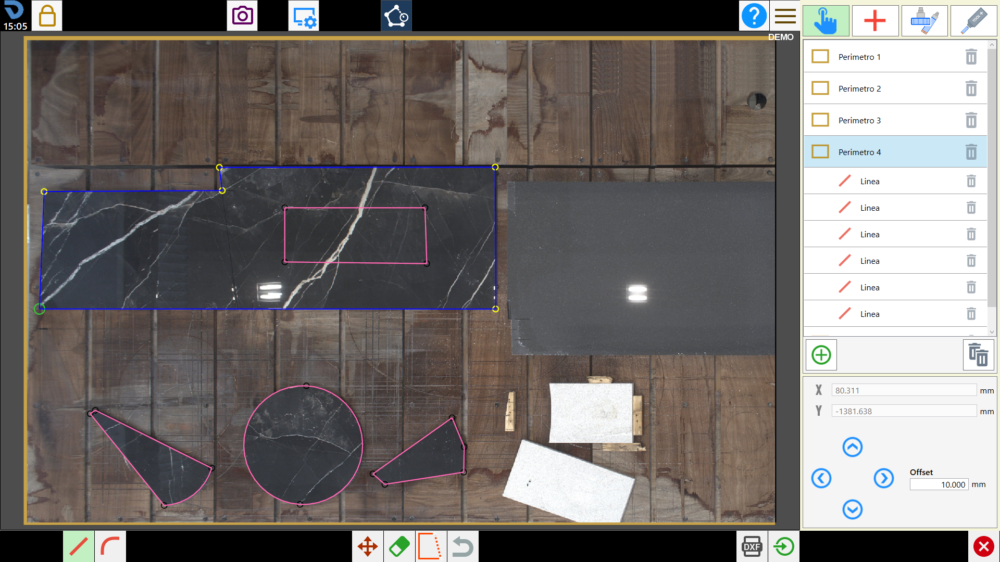
Se due o più perimetri sono uno contenuto nell'altro, vengono raggruppati in un unico pezzo con tagli interni.
Il rilevamento avviene automaticamente.
Importazione rapida | I perimetri vengono convertiti direttamente in pezzi ed inseriti sull’area di lavoro. |
Importazione con anteprima | Apre la finestra di anteprima importazione nella quale è possibile rivedere la gestione di importazione dei pezzi. |
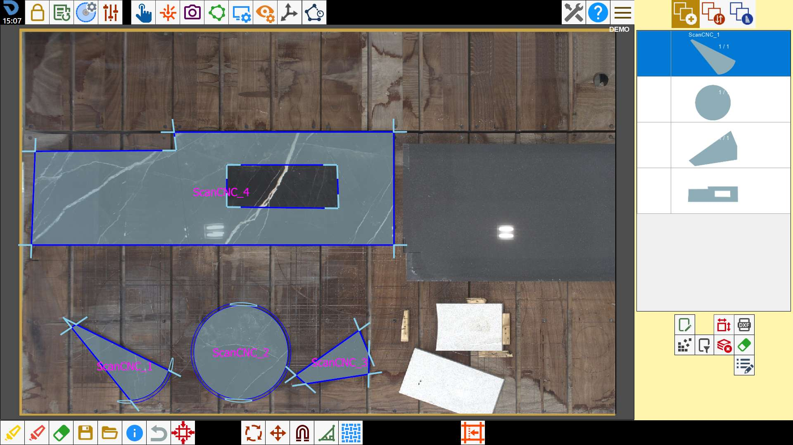
La conferma dell’importazione comporta la perdita di tutti i perimetri disegnati.
È possibile recuperare solo i perimetri importati come pezzi, riaprendo la funzionalità con i pezzi importati nell’area di lavoro.
Finestra di anteprima importazione
Mostra la lista dei pezzi rilevati e l'anteprima grafica di un pezzo selezionato.
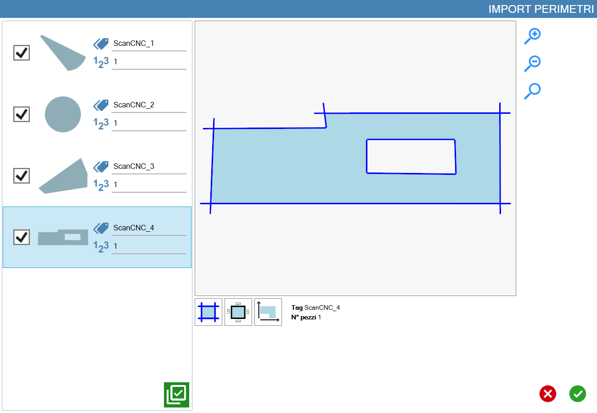
Lista pezzi
Elenco di tutti i pezzi rilevati sul lato sinistro del pannello. Ogni riga mostra il nome del pezzo e il numero di copie. I pezzi selezionati saranno importati.
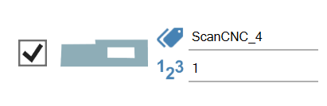
Dove le icone indicano:
Marca | |
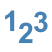 | N_ Pezzi |
Il pulsante sottostante permette di selezionare velocemente i pezzi dell’elenco.
Seleziona/Deseleziona tutto |
Anteprima
Visualizzazione grafica del pezzo selezionato nella lista. Mostra il perimetro, i tagli e le quote del pezzo selezionato.
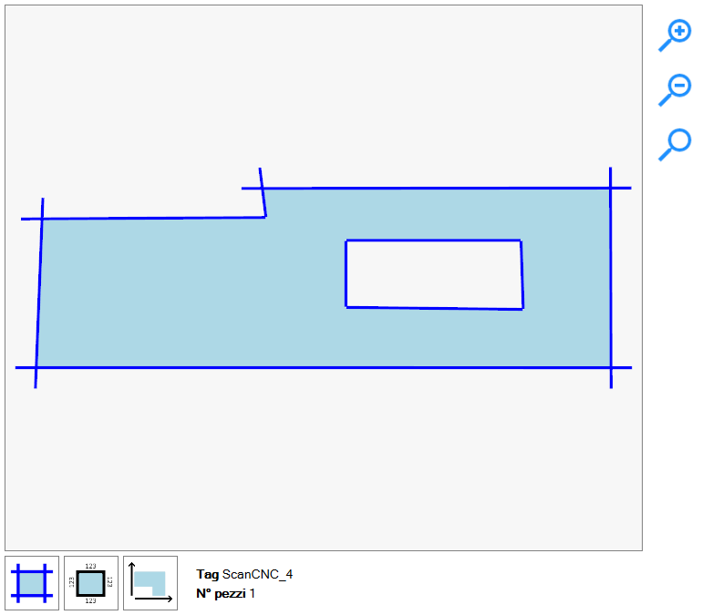
L’anteprima può essere visualizzata nelle seguenti modalità:
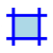 | Taglio |
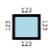 | Quote |
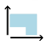 | Ingombro |